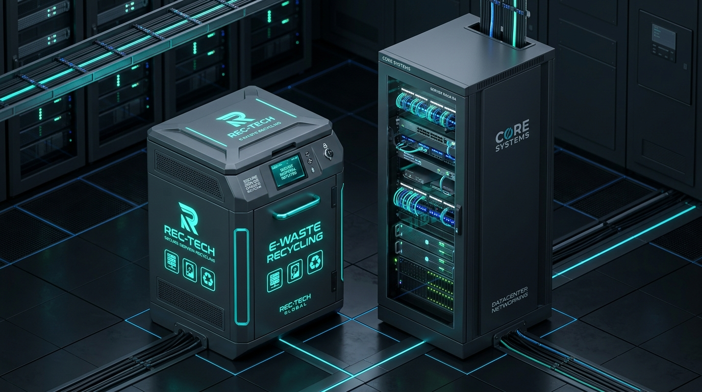

Feeder bin
A controlled collection point for recurring client refresh leftovers, picked up on schedule or when it fills.
For Treasure Valley MSPs
Sentinel gives MSPs a local, security-aware way to clear old servers, workstations, switches, storage, and loose media without turning the back room into a liability museum.

The MSP problem
Every refresh leaves a trail: desktops under desks, servers on shelves, loose drives in drawers, and networking gear nobody wants to inventory. Sentinel turns that pile into a documented handoff.
A controlled collection point for recurring client refresh leftovers, picked up on schedule or when it fills.
Clear accumulated servers, workstations, networking gear, and office tech from storage rooms or client sites.
Drives and removable storage are separated and routed according to the agreed disposition path.
Reusable hardware is recovered before recycling where practical, reducing waste and improving economics.
What you can tell clients
Local pickup for Boise, Meridian, Nampa, Eagle, and the broader Treasure Valley.
Certificates and additional insured documentation are available for approved jobs when requested.
We do not claim R2v3, NAID, or certified destruction unless the specific route and evidence support it.
Certified recycling/destruction partners can be used when the job requires that evidence trail.
Good MSP bin items
Needs prior approval
Next step
Send a rough count, location, whether drives are present, and whether you want a recurring bin or a one-time cleanout.